측량및지형공간정보기사 (2015-09-19 기출문제)
1과목: 측지학 및 위성측위시스템
1. 지구의 운동과 관련된 설명으로 옳지 않은 것은?
- 지구가 태양을 기준으로 한 번 자전하는 시간을 1태양일이라 한다.
- 지구가 항성을 기준으로 한 번 자전하는 시간을 1항성일이라 한다.
- 1태양일과 1항성일의 차이가 나는 것은 지구의 공전 때문이다.
- 지구의 자전운동은 항성의 연주시차, 별빛의 광행차, 별빛의 시선속도의 연주변화 등으로 증명된다.
(정답률: 57%)

2. GPS 신호의 오차에 관한 설명이 틀린 것은?
- 대류권 오차는 수학적 모델링을 통하여 감소시킬 수 있다.
- 안테나 위상중심 변동은 차분법에 의해 감소시킬 수 있다.
- 높은 건물이나 나무에서 떨어져 관측함으로써 다중경로 오차를 줄일 수 있다.
- 전리층 오차는 이중주파수의 사용으로 감소시킬 수 있다.
(정답률: 43%)
3. 극심입체투영법에 의해 위도 80° 이상 양극지역의 지도좌표를 표시하는 데 사용되는 것은?
- UPS 좌표
- 3차원 극좌표
- UTM 좌표
- 가우스크뤼거 좌표
(정답률: 73%)
4. 지구 내부의 원인에 의하여 자기장이 오랜 세월을 두고 변화하는 것을 가리키는 용어는?
- 일변화
- 영년변화
- 자기변화
- 월변화
(정답률: 76%)
5. GPS 신호에 포함된 항법메시지에서 제공되는 정보가 아닌 것은?
- 궤도정보
- 위성시계보정계수
- 위성상태
- 전리층 지연량
(정답률: 50%)
6. 북 자기극에서의 복각은?
- 90°
- 45°
- 30°
- 0°
(정답률: 65%)
7. GPS 측위 방식에 관한 설명으로 옳지 않은 것은?
- 단독측위 시 많은 수의 위성을 동시에 관측할 때 위성의 궤도정보 오차는 측위결과에 영향이 거의 없다.
- DGPS는 미지점과 기지점에서 동시에 관측을 실시하여 양 측점에서 관측한 정보를 모두 해석함으로써 미지점의 위치를 결정한다.
- RTK-GPS는 관측하는 전 과정 동안 모든 수신기에서 최소 4개 이상의 위성들로부터 송신되는 위성신호를 모두 동시에 수신하여야 한다.
- RTK-GPS는 공공측량 시 3, 4급 기준점측량에 적용할 수 있다.
(정답률: 58%)
8. GPS 신호에서 C/A 코드는 1.023Mbps로 이루어져 있다. GPS 신호의 전파 속도를 200,000km/s로 가정했을 때 코드 1비트 사이의 간격은 약 몇 m인가?
- 약 1.96m
- 약 19.6m
- 약 196m
- 약 1960m
(정답률: 58%)
9. 지상의 고정된 위치에서 중력측정을 할 때 측정결과를 보정할 사항이 아닌 것은?
- 고도 보정
- 지형 보정
- 에트베스 보정
- 아이소스타시 보정
(정답률: 54%)
10. 지구타원체면상에서 위도가 적도에 가까워짐에 따른 중력의 변화에 대한 설명으로 옳은 것은?
- 일반적으로 증가한다.
- 일반적으로 감소한다.
- 위도에 관계없이 일정하다.
- 경도에 따라 증가하기도 하고 감소하기도 한다.
(정답률: 73%)
11. GPS 코드 신호의 이중 차분(Double Differencing)을 이용하여 정지측위를 실시하는 경우 필요한 위성의 최소 개수는?
- 2개
- 4개
- 6개
- 8개
(정답률: 71%)
12. 키가 1.7m인 사람이 표고 600m 산 위에서 볼 수 있는 최대 수평거리는? (단, 지구의 곡률반지름은 6,370km이고 대기굴절에 의한 영향은 무시한다.)
- 약 59.7km
- 약 79.9km
- 약 80.4km
- 약 87.6km
(정답률: 28%)
13. 지표면상 구면삼각형의 3개 각을 관측한 결과, ∠A=51°30′, ∠B=65°40′, ∠C=63°35′이었다면 구면삼각형의 면적은? (단, 지구반지름 R6,370km이며, 측각오차는 없는 것으로 가정한다.)
- 531,149.9km2
- 590,166.5km2
- 642,342.4km2
- 718,633.4
(정답률: 58%)
14. 다음 중 천문좌표계가 아닌 것은?
- 지평좌표계
- 적도좌표계
- 황도좌표계
- 3차원 직각좌표계
(정답률: 73%)
15. GPS의 여러 오차 중 DGPS 기법으로 제거되지 않는 것은?
- 의사거리 측정오차
- 위성의 궤도정보 오차
- 전리층에 의한 지연
- 대류권에 의한 지연
(정답률: 47%)
16. 지평좌표계에서 어떤 시각의 별의 위치를 결정하는 요소는?
- 방위각, 고저각
- 적위, 방위각
- 적경, 적위
- 적경, 고저각
(정답률: 50%)
17. GPS 측량의 기준좌표계인 WGS 84(World Geodetic System 1984)에 대한 설명으로 옳지 않은 것은?
- 전 세계적으로 측정해 온 지구의 중력장과 지구 모양을 근거로 해서 만들어진 좌표계이다.
- X축은 국제시보국(BIH)에서 정의한 본초자오선과 평행한 평면이 지구 적도면과 교차하는 선이다.
- Y축은 X축과 Z축이 이루는 평면에 서쪽으로 수직인 방향으로 정의된다.
- Z축은 1984년 국제시보국(BIH)에서 채택한 평균극축(CTP)과 평행하다.
(정답률: 62%)
18. 경도 0°인 그리니치(Greenwich) 자오선에 대한 평균태양시인 세계시에 해당되지 않는 것은?
- UT0
- UT1
- UT2
- UT3
(정답률: 70%)
19. GPS의 활용분야와 가장 관계가 먼 것은?
- 지각변동 관측
- 실내 건축인테리어
- 측지기준망의 설정
- 지형공간정보 획득 및 시설물 유지관리
(정답률: 76%)
20. 지상에서 인공위성의 위치를 관측하는 방법에 대한 설명으로 틀린 것은?
- 전파의 속도를 이용하여 관측
- 전파의 도플러 효과를 이용하여 관측
- 레이저의 왕복시간을 이용하여 관측
- 하나의 관측점에서 촬영된 사진상의 위성과 그 배경에 있는 별들의 각, 거리를 관측
(정답률: 64%)
2과목: 응용측량
21. 그림과 같은 절토단면이 있다. 각 점의 좌표와 경사를 이용하여 계산한 단면의 면적은? (단, 좌표 및 거리의 단위는 m이다.)
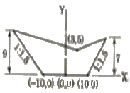
- 256m2
- 215m2
- 193m2
- 186m2
(정답률: 40%)
22. 도로의 종단곡선을 2차 포물선으로 설치하려고 한다. 이때 종단 경사가 상⋅하향 모두 4%라면 종단곡선의 시점과 시점으로부터 24m 떨어진 지점의 높이차(D)는?
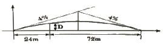
- 0.15m
- 0.24m
- 0.72m
- 0.96m
(정답률: 28%)
23. 하천의 유량관측방법이 아닌 것은?
- 월류부에 의한 방법
- 유량곡선에 의한 방법
- 하천기울기에 의한 방법
- 유출계수와 강우강도에 의한 방법
(정답률: 52%)
24. 노선측량의 기점에서 교점(I.P)까지의 추가거리가 308.15m이고, 곡선반지름이 300m, 교각(I)이 50°일 때 시단현의 길이는? (단, 중심말뚝 간격은 20m이다.)
- 8.26m
- 8.55m
- 11.25m
- 11.74m
(정답률: 38%)
25. 터널의 지상측량에 속하지 않는 것은?
- 지표중심선 측량
- 전 구간에 걸친 지형측량
- 지상수준측량
- 터널 내 중심선측량
(정답률: 54%)
26. 철도에서 곡선반지름이 500m인 단곡선을 80km/h의 주행속도로 설계할 때 캔트(cant)는? (단, 궤간1.5m, 중력가속도9.8m/s2)
- 90cm
- 15cm
- 7cm
- 4cm
(정답률: 52%)
27. 다음의 경관 중에서 인식대상의 주체에 관한 분류로 거리가 먼 것은?
- 자연 경관
- 인공 경관
- 생태 경관
- 터널 경관
(정답률: 58%)
28. 토지의 면적계산에 사용되는 심프슨 제2법칙은 그림과 같은 포물선 AMNB의 면적(빗금친 부분)을 사각형 ABCD 면적의 얼마로 가정해서 유도한 공식인가?
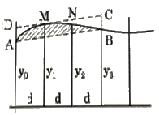
- 3/8
- 1/2
- 3/4
- 7/8
(정답률: 42%)
29. 철도의 곡선부에서 뒷바퀴가 앞바퀴보다 안쪽을 지나게 되므로 직선부보다 넓은 폭이 필요하게 되는데 이 넓히는 양을 무엇이라고 하는가?
- 캔트(cant)
- 슬랙(slack)
- 전도
- 횡거
(정답률: 60%)
30. 어떤 지점에서 조석관측을 수행하였을 경우 연이은 두 고조 또는 두 저조의 높이가 다르게 나타나게 되는데 이런 현상을 무엇이라고 하는가?
- 일조부등
- 평균고조간격
- 평균저조간격
- 반일주조
(정답률: 64%)
31. 그림과 같은 토지분할에서 면적비 n : m=1 : 1이 되기 위한 AD의 길이는? (단, a=27.2m, AB=52m, AC=46m)
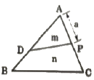
- 40.24m
- 42.35m
- 43.97m
- 46.72m
(정답률: 43%)
32. 다음 중 일반철도에 주로 쓰이는 완화곡선은?
- 클로소이드
- 3차 포물선
- 렘니스케이트
- 2차 포물선
(정답률: 50%)
33. 댐의 저수면 높이를 100m로 할 때 각주공식에 의한 저수량은? (단, 60m 미만의 저수량은 고려하지 않는다.)
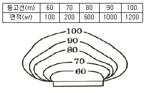
- 24333.3m3
- 32534.6m3
- 39781.4m3
- 42468.7m3
(정답률: 40%)
34. 하천측량에 있어서 심천측량을 실시하는 단계는?
- 평면측량
- 종단측량
- 횡단측량
- 골조측량
(정답률: 43%)
35. 터널측량에 관한 설명으로 옳지 않은 것은?
- 터널의 중심선 측량은 삼각측량 또는 트래버스측량으로 행한다.
- 터널 내의 측량에서는 기계의 십자선 또는 표척에 조명이 필요하다.
- 터널 내의 곡선 설치는 일반적으로 편각법을 사용한다.
- 터널측량은 터널 외 측량, 터널 내 측량, 터널 내외 연결측량으로 나눌 수 있다.
(정답률: 69%)
36. 하천측량에서 평면측량의 범위 및 거리에 대한 설명으로 옳지 않은 것은?
- 유제부에서의 측량범위는 제외지 전부와 제내지 200m 이상으로 한다.
- 무제부에서의 측량범위는 과거 최대홍수위선 이상까지로 한다.
- 홍수 방지 공사가 목적인 하천 공사에서는 하구에서부터 상류의 홍수 피해가 미치는 지점까지로 한다.
- 선박 운행을 위한 하천 개수가 목적일 때 하류는 하구까지로 한다.
(정답률: 57%)
37. 교각 I=60°, 외할 E=15m로 단곡선을 설치하고자 할 때 곡선길이는?
- 110.52m
- 101.52m
- 55.70m
- 45.70m
(정답률: 58%)
38. 하천측량에 대한 설명으로 옳지 않은 것은?
- 평균수위는 어떤 기간의 관측수위를 합하여 관측횟수로 나누어 평균한 수위이다.
- 하천 횡단면 직선 내 평균 유속을 구하는 데 2점법을 사용하는 경우 수면으로부터 수심의 2/10, 8/10 지점의 유속을 관측하여 평균한다.
- 하천측량에 수준측량을 할 때의 거리표는 하천의 중심에 직각의 방향으로 설치하는 것을 원칙으로 한다.
- 수위관측소의 위치는 지천의 합류점 및 분류점으로 수위의 변화가 활발한 곳이 적당하다.
(정답률: 62%)
39. 지하시설물 관측방법에서 원래 누수를 찾기 위한 기술로 수도관로 중 PVC 또는 플라스틱관을 찾는 데 이용되는 관측방법은?
- 음파관측법
- 전기관측법
- 자장관측법
- 탄성파관측법
(정답률: 54%)
40. 터널 내의 천정에 측점 A, B가 그림과 같이 설치되었다고 할 때 두 점의 고저차 H는? (단, 관측 경사거리100.5m, 수직각30°25′30″)
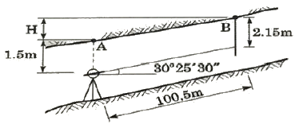
- 51.54m
- 59.67m
- 87.31m
- 103.31m
(정답률: 50%)
3과목: 사진측량 및 원격탐사
41. 항공라이다시스템에 대한 설명 중 옳지 않은 것은?
- 항공레이저 스캐너와 GPS/INS 시스템으로 구성된다.
- 지표면에 대한 3차원 좌표정보를 취득하는 시스템이다.
- 항공사진측량보다 기상조건의 영향을 적게 받는다.
- 극초단파를 사용하는 수동적 센서 시스템이다.
(정답률: 65%)
42. GPS/INS 통합시스템에 대한 설명으로 옳은 것은?
- GPS/INS는 가상 기준점을 이용한 GPS 측량기법이다.
- GPS/INS를 이용하면 항공기에서 중력이상을 측정할 수 있다.
- GPS/INS는 항공기에서 직접 수치표고모델을 생성하는 장비이다.
- GPS/INS를 이용하면 항공사진측량에서 지상기준점측량 비용을 절감할 수 있다.
(정답률: 54%)
43. 항공사진 도화작업에서 표정(orientation)에 관한 설명으로 틀린 것은?
- 내부표정 – 초점거리의 조정 및 주점의 일치
- 상호표정 – 7개의 표정인자(λ, ø, Ω, K, CX, CY, CZ)
- 절대표정 – 축척, 경사의 조정 및 위치의 결정
- 접합표정 – 모델 간, Strip 간의 접합요소
(정답률: 64%)
44. 숲 지역에서 수치표고모형(DEM) 데이터를 추출하기 위한 방법 중 가장 정확도가 높은 방법은?
- 항공사진측량
- 항공레이저측량
- 기존수치지도이용
- 위성영상자료이용
(정답률: 59%)
45. 디지털 카메라로 취득된 항공사진을 이용하여 수치지도를 제작하고자 할 때 사용되는 도화기로 적합한 것은?
- 기계식 도화기
- 전자식 도화기
- 해석도화기
- 수치도화기
(정답률: 43%)
46. 보통각 항공카메라의 사용 목적으로 가장 적합한 것은?
- 삼림 조사용
- 소축척 도화용
- 일반도화, 판독용
- 토지이용현황도 도화용
(정답률: 40%)
47. 촬영고도 1,500m, 180km/h로 비행하는 항공기에서 카메라의 노출시간이 1/250초이었다면 이때 사진상에 나타난 영상의 흔들림(image movement)량은? (단, 카메라의 초점거리는 150mm이다.)
- 0.01mm
- 0.02mm
- 0.03mm
- 0.04mm
(정답률: 52%)
48. 상호표정을 수행하는 방법이 아닌 것은?
- 공면조건을 이용하는 방법
- 종시차를 소거하는 방법
- 그루버의 기계적 방법
- 지상기준점을 이용하는 방법
(정답률: 33%)
49. 그림과 같은 수계 밴드에서 아래 통계값을 얻을 수 있는 트레이닝 필드로 적합하지 않은 것은?
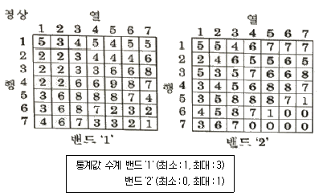
- 수계 트레이닝 필드
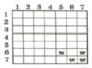
- 수계 트레이닝 필드
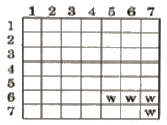
- 수계 트레이닝 필드
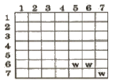
- 수계 트레이닝 필드
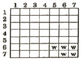
(정답률: 47%)
50. 다중분광 스캐너 중 Pushbroom 스캐너에 대한 설명으로 옳은 것은?
- 위성경로에 직각방향으로 빗자루로 쓸듯이 관측하는 스캐너
- 센서가 감지하는 분광범위가 가시광선에서 열적외선에 이르는 스캐너
- 회전하는 거울과 고체형 탐지기를 결합하여 지표면을 관측하는 스캐너
- 선형으로 배열된 전하결합소자(CCD)를 이용하여 한 번에 한 라인 전체를 기록하는 스캐너
(정답률: 46%)
51. 아래 그래프는 측량용 항공사진기의 방사렌즈 왜곡을 나타내고 있다. 사진좌표가 x=6cm, y=-8cm인 점에서 왜곡량은? (단, 주점의 사진좌표는 x=0, y=0이다.)
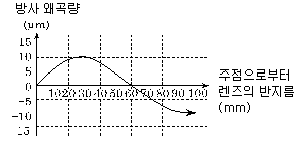
- 주점 방향으로 5
- 주점 방향으로 10
- 주점 반대방향으로 5
- 주점 반대방향으로 10
(정답률: 43%)
52. 주점에 대한 설명으로 옳은 것은?
- 카메라 렌즈의 중심을 통해 지표면에 내린 연직선이 만나는 점
- 사진의 중심점으로서 렌즈의 중심으로부터 사진면에 수선과 만나는 점
- 사진면에 직교되는 광선과 연직선이 이루는 각을 2등분하는 광선이 사진면에 마주치는 점
- 렌즈의 중심으로부터 지표면에 내린 수선의 발
(정답률: 48%)
53. 센서에 대한 해상도 중 관측된 에너지를 얼마나 자세히 정량화하는가를 나타내는 용어로, 기록 bit 수에 의해 평가하는 해상도는?
- 공간해상도(spatial resolution)
- 분광해상도(spectral resolution)
- 방사해상도(radiometric resolution)
- 주기해상도(temporal resolution)
(정답률: 30%)
54. 입체시된 항공사진상에서의 과고감에 대한 설명으로 옳은 것은?
- 실제 지형의 기복과 동일하게 나타난다.
- 촬영 위도에 따라 실제 지형의 기복보다 과소할 수도 과대할 수도 있다.
- 실제 지형의 기복보다 과소하게 나타난다.
- 실제 지형의 기복보다 과대하게 나타난다.
(정답률: 62%)
55. 레이더영상에서 대상지역이 완전히 평탄하고 지구곡률을 고려하지 않는다면 부각(depression angle)이 50°일 때 입사각(incident angle)은?
- 30°
- 35°
- 40°
- 45°
(정답률: 47%)
56. 6,000m 촬영고도에서 초점거리 20.0cm의 사진기로 평탄지를 찍은 연직사진이 있다. 이 사진상에 찍혀 있는 비고(比高) 400m인 지대의 사진축척은?
- 1 : 22,000
- 1 : 25,000
- 1 : 28,000
- 1 : 31,000
(정답률: 51%)
57. 한 쌍의 입체모델에서 왼쪽 사진에 찍힌 도로 위의 어느 차량이 오른쪽 사진에서는 주점기선에 대해 위쪽으로 이동한 상태로 촬영되었다. 이 모델을 입체시하면 차량은 어떻게 보이는가?
- 도로에 안착한 상태로 보인다.
- 도로 위에 떠 있는 상태로 보인다.
- 도로 아래로 가라앉아 있는 상태로 보인다.
- 입체시가 되지 않고 두 개의 차량으로 보인다.
(정답률: 54%)
58. 위성영상에서 취득하여 보정 처리된 개별 영상을 하나의 영상으로 합치는 과정을 설명한 용어로 옳은 것은?
- 영상 모자이크(Image Mosaic)
- 영상 융합(Image Fusion)
- 공간 필터링(Spatial Filtering)
- 영상 해상도 융합(Image Resolution Merge)
(정답률: 34%)
59. 사진기준점 측량에서 입체모형좌표값을 계산하는 과정은?
- 내부표정
- 상호표정
- 절대표정
- 외부표정
(정답률: 33%)
60. 센서의 순간시야각(IFOV : Instantaneous Field Of View)이 2.5mrad(milli-radian)이고 비행고도(AGL)가 16,000m일 때 화소 크기는?
- 40m×40m
- 64m×64m
- 400m×400m
- 640m×640m
(정답률: 38%)
4과목: 지리정보시스템
61. 조사되지 않은 점에 대한 속성값을 주변의 기지점으로부터 예측하는 작업을 무엇이라 하는가?
- 보간
- 디지타이징
- 정합
- 모형화
(정답률: 59%)
62. 수치표고모델(DEM)과 식생지도를 중첩분석하여 표고에 따른 식생분포를 분석하고자 한다. 대상지역에서 침엽수림이 분포하는 지역 중 표고 100m 이상인 지역의 비율은? (단, 픽셀 해상도는 100m이다.)
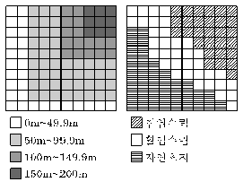
- 100%
- 94%
- 88%
- 76%
(정답률: 37%)
63. 지리정보시스템(GIS)의 분석방법 중 교통로와 시가지 확장 사이의 관계를 설명하기 위해 사용하는 방법으로 가장 적합한 것은?
- 점사상과 선사상의 중첩
- 선사상과 면사상의 중첩
- 면사상과 점사상의 중첩
- 면사상과 면사상의 중첩
(정답률: 61%)
64. 지리정보시스템(GIS)의 일반적인 자료처리 단계를 순서대로 바르게 나열한 것은?
- 자료의 수치화 – 자료조작 및 관리 – 응용⋅분석 - 출력
- 자료조작 및 관리 – 자료의 수치화 – 응용⋅분석 – 출력
- 자료의 수치화 – 응용⋅분석 – 자료조작 및 관리 – 출력
- 자료조작 및 관리 – 응용⋅분석 – 자료의 수치화 – 출력
(정답률: 59%)
65. 객체지향형 데이터베이스관리시스템의 특징이 아닌 것은?
- 자료의 갱신이 용이하다.
- 자료뿐만 아니라 자료의 구성을 위한 방법론도 저장이 가능하다.
- 지도의 정보를 도형과 속성으로 나누어 유형별로 테이블에 저장한다.
- 객체는 독립된 동질성을 가진 개체이며, 상속성을 갖는다.
(정답률: 33%)
66. 지리정보시스템(GIS)을 구축하고 활용하기 위한 기본적인 구성요소를 세 가지로 구분할 때 거리가 먼 것은?
- 공간분석기술
- 공간데이터베이스
- 소프트웨어
- 하드웨어
(정답률: 65%)
67. 지리정보시스템(GIS)의 지형분석에서 불규칙하게 분포된 위치에서의 표고를 추출하여 이들 위치관계를 삼각형 형태로 연결하여 지형을 표현하는 방식은?
- Overlay 방식
- Grid 방식
- TIN 방식
- Buffer 방식
(정답률: 65%)
68. 원활한 의료서비스 제공을 위해서 발생가능 환자 수, 지원가능 의사 및 병동의 수 등을 고려하여 각각의 병원에 지원 지역을 지정하고자 할 경우에 적용할 수 있는 가장 적절한 GIS 분석 방법은?
- 근접 계산
- 최적경로 탐색
- 영향권 생성
- 네트워크 할당
(정답률: 56%)
69. 수치화된 공간정보 데이터의 관리 및 활용 편의를 위해 제공되는 데이터의 제작, 정의 및 이력과 관련된 정보를 무엇이라 하는가?
- 헤더 데이터(header data)
- 오픈 데이터(open data)
- 이력 데이터(history data)
- 메타 데이터(meta data)
(정답률: 63%)
70. 속성분류 정확도를 평가하기 위하여 참조데이터와 샘플데이터를 정리한 결과가 표와 같을 때, 전체 정확도는?
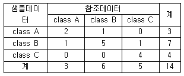
- 21.4%
- 35.7%
- 50.0%
- 78.6%
(정답률: 53%)
71. 국토교통부에서 다양한 공간정보를 서비스하는 오픈 플랫폼을 무엇이라 하는가?
- 브이월드
- 위성기준점서비스
- 항공사진서비스
- 구글 3D
(정답률: 59%)
72. 격자(Raster)구조에 비해 벡터(Vector)구조가 갖는 특징으로 옳지 않은 것은?
- 자료구조가 단순하다.
- 다양한 공간분석이 가능하다.
- 속성정보의 갱신이 용이하다.
- 지형의 세세한 표현에 효과적이다.
(정답률: 62%)
73. 대상물에 대한 공간정보 구축 시 일반적인 도형정보 표현방법으로 가장 거리가 먼 것은?
- 행정구역 – 면(Polygon)
- 저수지 – 면(Polygon)
- 소화전 – 면(Polygon)
- 교량 – 면(Polygon)
(정답률: 61%)
74. 공간정보 자료 형식 중 하나인 벡터데이터에서 연결선(polyline)으로 체인에서 방향이 바뀌는 지점을 나타내는 용어로서 체인상에서 좌표 라벨을 부여받는 점은?
- 레이어(Layer)
- 커버리지(Coverage)
- 노드(Node)
- 버텍스(Vertex)
(정답률: 50%)
75. 지리정보시스템(GIS) 데이터베이스에 관한 설명으로 옳지 않은 것은?
- 레코드는 필드를 구성하는 각각의 항목을 말한다.
- 데이터베이스는 초기 구축과 유지관리비용이 높다.
- 파일베이스 방식에서 데이터베이스 방식으로 발전하였다.
- GIS에서는 일반적으로 동일 길이 레코드 방식보다는 가변길이 레코드 방식을 선호한다.
(정답률: 40%)
76. 지리정보시스템(GIS) 데이터베이스의 관리 및 구축 시 적용하는 DBMS 방식의 내용으로 옳지 않은 것은?
- 파일처리방식의 단점을 보완한 방식이다.
- DBMS 프로그램은 독립적으로 운영될 수 있다.
- 데이터베이스와 사용자 간 모든 자료의 흐름을 조정하는 중앙제어역할이 가능하다.
- DBMS 프로그램은 자료의 신뢰와 동시 사용을 위하여 단일 프로그램으로 구성된다.
(정답률: 53%)
77. 지리정보시스템(GIS) 분석 방법 중 유클리디언 거리 공식을 이용하는 방법은?
- 면사상 중첩 분석
- 버퍼 분석
- 선사상 중첩 분석
- 인접성 분석
(정답률: 42%)
78. 다음 중 위상정보에 관한 설명으로 틀린 것은?
- 벡터 데이터 구조의 활용을 위해 부가되는 정보이다.
- 위상구조의 대표적인 구조는 스파게티 구조로 공간분석 시 효과적이다.
- 공간상에 존재하는 객체의 형태(shape), 인접성, 연결성에 관한 정보를 제공한다.
- 다양한 공간분석을 가능하게 한다.
(정답률: 49%)
79. 불 논리(Boolean Logic)를 이용하여 속성과 공간적 특성에 대한 자료를 검색(검게 채색된 부분)하는 방법이 잘못 짝지어진 것은?
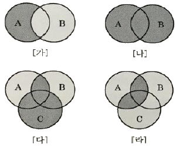
- [가] - A NOT B
- [나] - A OR B
- [다] - (A NOT B) OR C
- [라] - A AND (B OR C)
(정답률: 56%)
80. 격자(Raster) 자료구조에 대한 설명으로 옳은 것은?
- 격자의 크기보다 작은 객체의 표현도 가능하다.
- 격자의 크기가 작을수록 객체의 형태를 자세히 나타낼 수 있다.
- 격자의 크기가 클수록 표현되는 자료는 보다 상세한 반면, 컴퓨터 저장용량은 증가한다.
- 격자의 크기가 작아지면 이에 비례하여 자료의 양이 감소한다.
(정답률: 54%)
5과목: 측량학
81. 최소제곱법의 관측방정식이 AX＝L+V와 같은 행렬식의 형태로 표시될 때, 이 행렬식을 풀기 위한 정규방정식과 미지수 행렬 X로 옳은 것은? (단, 관측의 경중률은 동일하다.)
- ATAX＝L, X=(ATA)-1L
- AATX＝L, X＝(ATA)-1L
- AATX＝ATL, X＝(AAT)-1ATL
- ATAX＝ATL, X=(ATA)-1ATL
(정답률: 25%)
82. 두 점간의 고저차를 구하기 위하여 경사거리 30.0m±0.2m, 경사각 15°30′의 값을 얻었다. 경사거리와 경사각이 고저차 결정의 독립변수로 작용할 때 고저차의 오차는? (단, 각측량에는 오차가 없는 것으로 가정한다.)
- ±5.3cm
- ±10.5cm
- ±15.8cm
- ±27.6cm
(정답률: 29%)
83. A점을 출발하여 B점까지 3개의 노선을 통하여 수준측량을 실시하였다. A, B 2점 간의 고저차에 대한 최확값은?
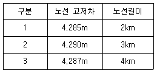
- 4.290m
- 4.289m
- 4.288m
- 4.287m
(정답률: 48%)
84. 어느 1개의 각을 10회 관측하여 표와 같이 오차가 발생하였다면 평균 제곱근 오차는?
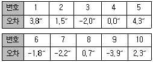
- 1.75″
- 2.75″
- 3.75″
- 4.75″
(정답률: 43%)
85. 그림과 같은 삼각망에서 CD의 방위는?
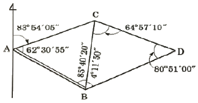
- S 12°51′50″ E
- S 12°11′50″ W
- S 23°51′10″ E
- S 23°45′30″ W
(정답률: 39%)
86. 축척 1 : 50,000 지형도에서 2점의 거리가 8.0cm이었고 축척을 모르는 다른 지형도상에서는 동일한 2점 간의 거리가 28cm이었다면 지형도의 축척은?
- 약 1 : 5,000
- 약 1 : 7,000
- 약 1 : 10,000
- 약 1 : 14,000
(정답률: 49%)
87. 강 주변의 표고를 결정하기 위하여 교호수준측량을 실시하여 다음 결과를 얻었다. A점의 표고가 56.867m일 때 B점의 표고는? (단, a1=1.465m, a2=0.308m, b1=3.274m, b2=1.047m)
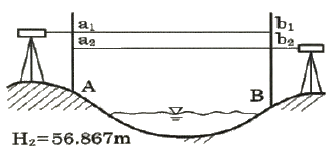
- 55.583m
- 55.593m
- 58.141m
- 58.131m
(정답률: 44%)
88. 그림에서 ∠AOB, ∠BOC, ∠AOC를 관측한 결과가 표와 같을 때, ∠AOC의 최확값은?
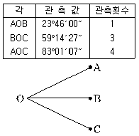
- 83°01′⑤″
- 83°01′03″
- 83°01′01″
- 83°00′59″
(정답률: 26%)
89. 기선측량용 강철줄자는 정오차 보정을 위한 검정표를 가지고 있다. 이 항목에 포함이 되지 않는 사항은?
- 선팽창계수
- 단위길이당 무게
- 상수(특성값)
- 줄자의 두께
(정답률: 53%)
90. 지형도 및 수치지형도에 대한 설명으로 옳지 않은 것은?
- 지형도는 지표면상의 자연적 또는 인공적인 지형의 수평 또는 수직의 상호위치관계를 관측하여 그 결과를 일정한 축척과 도식으로 도면에 나타낸 것이다.
- 지형도상에 표시되는 요소로 지형에는 지물과 지모가 있다.
- 수치지형도의 축척은 일정하기 때문에 확대 및 축소하여 다양한 축척의 지형도를 만들 수 없다.
- 수치지형도의 지형 및 지물은 레이어로 구분된다.
(정답률: 59%)
91. 등고선 간의 최단 거리 방향이 의미하는 것은?
- 최소 경사 방향을 표시한다.
- 최대 경사 방향을 표시한다.
- 상향 경사를 표시한다.
- 하향 경사를 표시한다.
(정답률: 58%)
92. 두 점의 평면직각좌표계의 북방을 기준으로 계산되는 측선의 방향을 무엇이라 하는가?
- 진북 방향각
- 진북 방위각
- 도북 방위각
- 자북 방위각
(정답률: 40%)
93. 그림과 같이 기선 D=20m, 수평각 α=80°, β=70°, 연직각 V=40°를 관측하였다. P의 높이 H는? (단, A, B, C점은 동일 평면인 지상에 있고 P점은 목표점이다.)
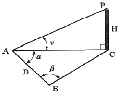
- 31.54m
- 44.80m
- 49.07m
- 58.48m
(정답률: 43%)
94. 정방형 토지의 면적을 구하기 위하여 30m 줄자로 변의 길이를 관측하고 면적을 계산한 결과 1,024m2이었다. 그러나 줄자가 기준자와 비교하여 5cm 늘어나 있었다면 이 토지의 실제 면적은?
- 1025.4m2
- 1026.4m2
- 1027.4m2
- 1028.4m2
(정답률: 40%)
95. 공공측량성과의 심사에 관한 설명으로 옳지 않은 것은?
- 공공측량성과의 제출 및 심사에 필요한 사항은 대통령령으로 정한다.
- 국토교통부장관은 심사 결과 공공측량성과가 적합하다고 인정되면 대통령령으로 정하는 바에 따라 그 측량성과를 고시하여야 한다.
- 국토교통부장관은 공공측량성과의 사본을 받았으면 지체없이 그 내용을 심사하여 그 결과를 해당 공공측량시행자에게 통지하여야 한다.
- 공공측량시행자는 공공측량성과를 얻은 경우에는 지체없이 그 사본을 국토교통부장관에게 제출하여야 한다.
(정답률: 38%)
96. 국토교통부장관이 수로도서지의 수정, 항해에 필요한 경고, 그 밖에 해상교통안전과 관련된 사항을 국토교통부령으로 정하는 바에 따라 항해자 등 관련 정보가 필요한 자에게 제공하는 인쇄물과 수치제작물을 무엇이라 하는가?
- 항해정보
- 항행통보
- 수로조서
- 수로도지
(정답률: 27%)
97. 공공측량 작업계획서를 제출할 때 포함되지 않아도 되는 사항은?
- 공공측량의 시행자의 규모
- 공공측량의 위치 및 사업량
- 공공측량의 목적 및 활용 범위
- 사용할 측량기기의 종류 및 성능
(정답률: 49%)
98. 국토교통부장관은 측량기본계획을 몇 년마다 수립하여야 하는가?
- 1년
- 3년
- 5년
- 10년
(정답률: 60%)
99. 기본측량성과의 국외 반출 금지의 예외 조항으로 “외국 정부와 기본측량성과를 서로 교환하는 등 대통령령으로 정하는 경우”에 해당되지 않는 것은?
- 정부를 대표하여 외국 정부와 교섭하거나 국제회의 또는 국제기구에 참석하는 자가 자료로 사용하기 위하여 지도나 그 밖에 필요한 간행물 또는 측량용 사진을 반출하는 경우
- 관광객 유치와 관광시설 홍보를 목적으로 지도나 그 밖에 필요한 간행물 또는 측량용 사진을 제작하여 반출하는 경우
- 축척 1/50,000 미만인 소축척의 수치지형도를 국외로 반출하는 경우
- 축척 1/25,000 또는 1/50,000 지도로서 국가정보원장의 지원을 받아 보안성 검토를 거친 경우(등고선, 발전소, 가스관 등 국토교통부장관이 정하여 고시하는 시설 등이 표시되지 아니한 경우로 한정한다.)
(정답률: 61%)
100. 성능검사를 받아야 하는 측량기기와 검사주기가 옳은 것은?
- 레벨 : 2년
- 토털 스테이션 : 1년
- 금속관로 탐지기 : 4년
- 지피에스(GPS) 수신기 : 3년
(정답률: 57%)